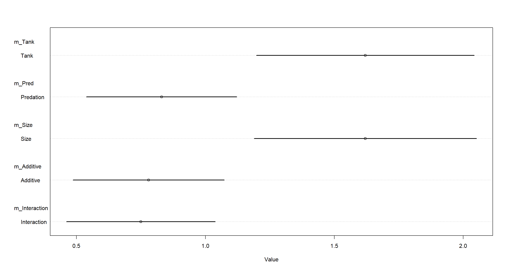
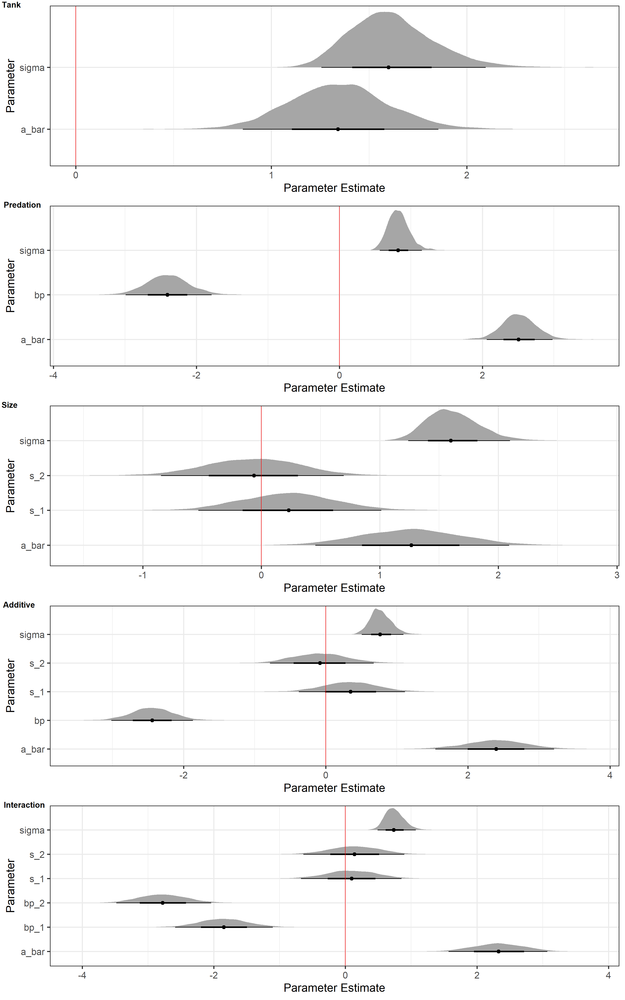
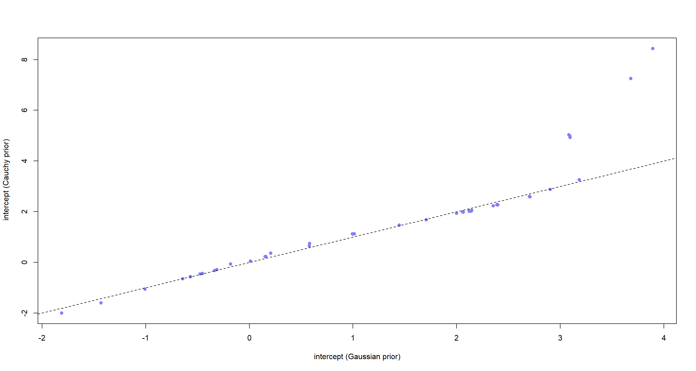
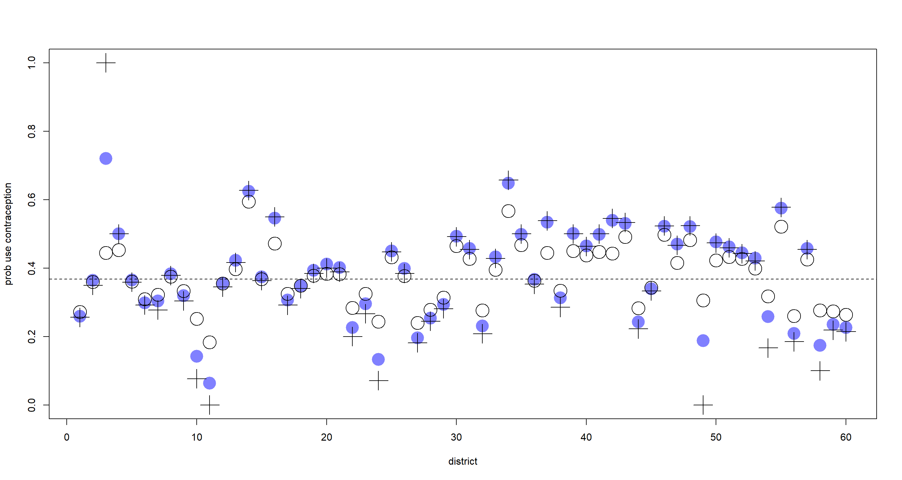
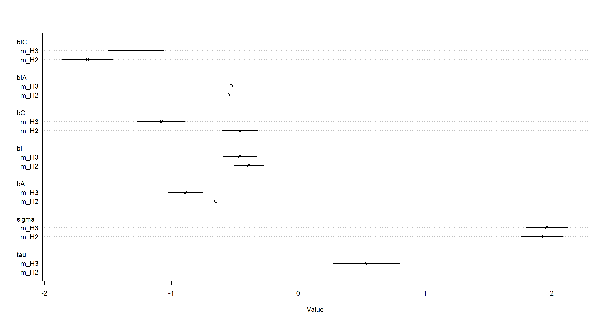

Chapter 13
Models with Memory
Material
Introduction
These are answers and solutions to the exercises at the end of chapter 13 in Satistical Rethinking 2 by Richard McElreath. I have created these notes as a part of my ongoing involvement in the AU Bayes Study Group. Much of my inspiration for these solutions, where necessary, has been obtained from
the solutions provided to instructors by Richard McElreath himself.
R Environment
For today’s exercise, I load the following packages:
library(rethinking)
library(rstan)
library(ggplot2)
library(tidybayes)
library(cowplot)
Easy Exercises
Practice E1
Question: Which of the following priors will produce more shrinkage in the estimates?
(a) $α_{tank} ∼ Normal(0, 1)$
(b) $α_{tank} ∼ Normal(0, 2)$
Answer: Shrinkage is introduced by regularising/informative priors. This means that option (a) will introduce more shrinkage because it’s distribution is narrower than that of (b) and thus more informative/regularising.
Practice E2
Question: Make the following model into a multilevel model.
$$y_i ∼ Binomial(1, p_i)$$ $$logit(p_i) = α_{group[i]} + βx_i$$ $$α_{group} ∼ Normal(0, 10)$$ $$β ∼ Normal(0, 1)$$
Answer: To make the above model into a multi-level model, we need to assign some hyperpriors. These are priors on parameters of parameters. In this case, we express $\alpha_{group[i]}$ (a parameter) through a prior with another set of parameters ($\bar\alpha, \sigma_\alpha$). These parameters, in turn, require priors themselves - so called hyperpriors.
$$y_i ∼ Binomial(1, p_i)$$ $$logit(p_i) = α_{group[i]} + βx_i$$ $$α_{group} ∼ Normal(\bar\alpha, \sigma_\alpha)$$ $$\bar\alpha \sim Normal(0, 2)$$ $$\sigma_\alpha \sim Exponential(1)$$ $$β ∼ Normal(0, 1)$$
The numbers we feed into our hyperpriors here are difficult to assess for sensibility since we don’t have any data to test the performance of both models and their assumptions.
Practice E3
Question: Make the following model into a multilevel model.
$$y_i ∼ Normal(\mu, \sigma)$$ $$logit(p_i) = α_{group[i]} + βx_i$$ $$α_{group} ∼ Normal(0, 10)$$ $$\beta \sim Normal(0, 1)$$ $$\sigma ∼ HalfCauchy(0, 2)$$
Answer: Well this is just a repeat of the previous problem:
$$y_i ∼ Normal(\mu_i, \sigma)$$ $$logit(p_i) = α_{group[i]} + βx_i$$ $$α_{group} ∼ Normal(\bar\alpha, \sigma_\alpha)$$ $$\bar\alpha \sim Normal(0, 2)$$ $$\sigma_\alpha \sim Exponential(1)$$ $$\beta \sim Normal(0, 1)$$ $$\sigma ∼ HalfCauchy(0, 2)$$
Practice E4
Question: Write an example mathematical model formula for a Poisson regression with varying intercepts.
Answer: This is simply just the solution to E2 with a change to the outcome distribution (now Poisson) and link function (now log):
$$y_i ∼ Poisson(\lambda_i)$$ $$log(\lambda_i) = α_{group[i]} + βx_i$$ $$α_{group} ∼ Normal(\bar\alpha, \sigma_\alpha)$$ $$\bar\alpha \sim Normal(0, 2)$$ $$\sigma_\alpha \sim Exponential(1)$$ $$β ∼ Normal(0, 1)$$
Again, I would like to highlight that I can’t set any meaningful priors here because I have no idea what we are analysing. These exercises are just about model structure, I wager.
Practice E5
Question: Write an example mathematical model formula for a Poisson regression with two different kinds of varying intercepts, a cross-classified model.
Answer: I start with the solution to E4 and add another intercept group ($\gamma$) which target a cluster of days like the example in the book:
$$y_i ∼ Poisson(\lambda_i)$$ $$log(\lambda_i) = α_{group[i]}+ \gamma_{day[i]} + βx_i$$ $$α_{group} ∼ Normal(\bar\alpha, \sigma_\alpha)$$ $$\bar\alpha \sim Normal(0, 2)$$ $$\sigma_\alpha \sim Exponential(1)$$ $$\gamma_{day} ∼ Normal(\bar\gamma, \sigma_\gamma)$$ $$\bar\gamma \sim Normal(0, 2)$$ $$\sigma_\gamma \sim Exponential(1)$$
$$β ∼ Normal(0, 1)$$
Medium Exercises
Practice M1
Question: Revisit the Reed frog survival data, data(reedfrogs), and add the predation and size treatment variables to the varying intercepts model. Consider models with either main effect alone, both main effects, as well as a model including both and their interaction. Instead of focusing on inferences about these two predictor variables, focus on the inferred variation across tanks. Explain why it changes as it does across models.
Answer: This corresponds to the multi-level tadpole example in the book (starting in section 13.1 on page 415). First, I load the data and prepare the data list as was done in the book and add in the data about predation (binary - yes/no) and size treatment (binary - small/large):
data(reedfrogs)
d <- reedfrogs
dat <- list(
S = d$surv,
n = d$density,
tank = 1:nrow(d),
pred = ifelse(d$pred == "no", 0L, 1L),
size_ = ifelse(d$size == "small", 1L, 2L)
)
ulam() doesn’t like when any data value is called size. That’s why I call it size_.
Now, I can define the models. Note that I am running all of them with log_lik = TRUE so I can compare them later:
- Tank-only model which will serve as our baseline.
m_Tank <- ulam(
alist(
S ~ dbinom(n, p),
logit(p) <- a[tank],
a[tank] ~ dnorm(a_bar, sigma),
a_bar ~ dnorm(0, 1.5),
sigma ~ dexp(1)
),
data = dat, chains = 4, cores = 4, log_lik = TRUE, iter = 2e3
)
- Predation model:
m_Pred <- ulam(
alist(
S ~ dbinom(n, p),
logit(p) <- a[tank] + bp * pred,
a[tank] ~ dnorm(a_bar, sigma),
bp ~ dnorm(-0.5, 1),
a_bar ~ dnorm(0, 1.5),
sigma ~ dexp(1)
),
data = dat, chains = 4, cores = 4, log_lik = TRUE, iter = 2e3
)
- Size model:
m_Size <- ulam(
alist(
S ~ dbinom(n, p),
logit(p) <- a[tank] + s[size_],
a[tank] ~ dnorm(a_bar, sigma),
s[size_] ~ dnorm(0, 0.5),
a_bar ~ dnorm(0, 1.5),
sigma ~ dexp(1)
),
data = dat, chains = 4, cores = 4, log_lik = TRUE, iter = 2e3
)
- Predation + Size model:
m_Additive <- ulam(
alist(
S ~ dbinom(n, p),
logit(p) <- a[tank] + bp * pred + s[size_],
a[tank] ~ dnorm(a_bar, sigma),
bp ~ dnorm(-0.5, 1),
s[size_] ~ dnorm(0, 0.5),
a_bar ~ dnorm(0, 1.5),
sigma ~ dexp(1)
),
data = dat, chains = 4, cores = 4, log_lik = TRUE, iter = 2e3
)
- Predation-Size-Interaction model:
# this is a con-centred parametrisation for giggles:
m_Interaction <- ulam(
alist(
S ~ dbinom(n, p),
logit(p) <- a_bar + a[tank] * sigma + bp[size_] * pred + s[size_], # interaction comes in via bP[size_]
a[tank] ~ dnorm(0, 1),
bp[size_] ~ dnorm(-0.5, 1),
s[size_] ~ dnorm(0, 0.5),
a_bar ~ dnorm(0, 1.5),
sigma ~ dexp(1)
),
data = dat, chains = 4, cores = 4, log_lik = TRUE, iter = 2e3
)
Now that we have all the models ready, we can assess the variation among tanks. This information is contained within the sigma parameter in all of the models:
plot(coeftab(m_Tank, m_Pred, m_Size, m_Additive, m_Interaction),
pars = "sigma",
labels = c("Tank", "Predation", "Size", "Additive", "Interaction")
)

Quite evidently, omitting pred (predation) from our models assigns a lot of variation to the tank variable. Conclusively, we can say that predation explains a lot of the variation across tanks and helps to explain it. Omitting predation from our models simply assigns this variation to the tank intercepts without explaining it.
Practice M2
Question: Compare the models you fit just above, using WAIC. Can you reconcile the differences in WAIC with the posterior distributions of the models?
Answer:
compare(m_Tank, m_Pred, m_Size, m_Additive, m_Interaction)
## WAIC SE dWAIC dSE pWAIC weight
## m_Interaction 199.0758 9.089561 0.0000000 NA 18.81776 0.2771353
## m_Pred 199.5219 8.995153 0.4460306 3.177855 19.44211 0.2217367
## m_Additive 199.9935 8.737508 0.9176872 2.209613 19.16555 0.1751534
## m_Tank 200.0751 7.259051 0.9992752 6.180324 20.94365 0.1681520
## m_Size 200.2019 7.140956 1.1260679 5.992834 20.97228 0.1578226
Evidently, all of our models are expected to perform similarly in out-of-sample predictions. So how do the posterior samples look like? Here, I write a function to extract all parameter samples from the posterior given any of our models except the $\alpha$ parameters and feed them into a ggplot using the beautiful stat_halfeye() from the tidybayes package:
na.omit.list <- function(y) {
return(y[!sapply(y, function(x) all(is.na(x)))])
}
Halfeyes_NoAs <- function(model = NULL, N = 1e4) {
Samples <- extract.samples(model, n = N)
list <- as.list(rep(NA, sum(!startsWith(names(model@coef), "a["))))
names(list) <- names(model@coef)[!startsWith(names(model@coef), "a[")]
for (i in names(Samples)) {
if (i == "a") {
next
} # skip all "a" parameters
if (is.na(dim(Samples[[i]])[2])) {
list[[i]] <- data.frame(
Posterior = Samples[[i]],
Parameter = rep(i, length(Samples[[i]]))
)
} else { # if there are multiple parameter levels
list[[i]] <- data.frame(
Posterior = Samples[[i]][, 1],
Parameter = rep(paste(i, 1, sep = "_"), length(Samples[[i]]))
)
for (k in 2:dim(Samples[[i]])[2]) {
list[[i]] <- rbind(
list[[i]],
data.frame(
Posterior = Samples[[i]][, k],
Parameter = rep(paste(i, k, sep = "_"), length(Samples[[i]]))
)
)
}
}
} # Samples-loop
Plot_df <- do.call("rbind", na.omit.list(list))
Plot_gg <- ggplot(Plot_df, aes(y = Parameter, x = Posterior)) +
stat_halfeye() +
labs(x = "Parameter Estimate", y = "Parameter") +
geom_vline(xintercept = 0, color = "red") +
theme_bw(base_size = 20)
return(Plot_gg)
}
I don’t claim that this is beautiful code. There’s probably and easier way of doing this. Basically, this is a botch job. I am aware that it is, but it works for now.
Let me apply this to our models and then show you the plots:
plot_ls <- lapply(list(m_Tank, m_Pred, m_Size, m_Additive, m_Interaction), Halfeyes_NoAs, N = 1e4)
plot_grid(
plotlist = plot_ls, labels = c("Tank", "Predation", "Size", "Additive", "Interaction"),
ncol = 1, vjust = 1.25, hjust = -0.1
)

These plots only tell us what our models have sampled from the posterior in terms of parameter estimates. They do not tell us how accurate the models are when predicting data. However, they do tell us loads about what the models use to make their predictions.
For now, I will focus on the posterior distributions of our predation parameter (bp) and size parameter (s). When inspecting these, it is apparent that the parameter estimates of bp are much further from 0 than those for s. This holds true across all models. In addition, anytime bp is contained in a model, sigma (the variation in tank intercepts) decreases drastically.
This is consistent with the model rankings. The tank-only model does not because size and predation are meaningless predictors. The posterior distributions above show us that they do contain important information. The tank-only model does well because there exists variation among tanks for a multitude of reasons. Prediction and inference of causality are not the same thing, after all.
Practice M3
Question: Re-estimate the basic Reed frog varying intercept model, but now using a Cauchy distribution in place of the Gaussian distribution for the varying intercepts. That is, fit this model:
$$s_i ∼ Binomial(n_i, p_i)$$ $$logit(p_i) = α_{tank[i]}$$ $$α_{tank} ∼ Cauchy(\alpha, \sigma)$$ $$\alpha ∼ Normal(0, 1)$$ $$\sigma ∼ Exponential(1)$$
Compare the posterior means of the intercepts, $α_{tank}$, to the posterior means produced in the chapter, using the customary Gaussian prior. Can you explain the pattern of differences?
Answer: This is simply the m_Tank model we ran previously, but with a dcauchy() prior on $\alpha_{tank}$. Because the Cauchy distribution comes with very long tails, we run into a few issues of divergent transitions with default parameters and so I add control=list(adapt_delta=0.99) to the call to ulam() for more measured sampling of the posterior space:
m_TankCauchy <- ulam(
alist(
S ~ dbinom(n, p),
logit(p) <- a[tank],
a[tank] ~ dcauchy(a_bar, sigma),
a_bar ~ dnorm(0, 1.5),
sigma ~ dexp(1)
),
data = dat, chains = 4, cores = 4, log_lik = TRUE,
iter = 2e3, control = list(adapt_delta = 0.99)
)
Now let’s compare the posterior means of m_Tank and the new m_TankCauchy for their estimates of the $\alpha_{tank}$ parameters:
a_Tank <- apply(extract.samples(m_Tank)$a, 2, mean)
a_TankCauchy <- apply(extract.samples(m_TankCauchy)$a, 2, mean)
plot(a_Tank, a_TankCauchy,
pch = 16, col = rangi2,
xlab = "intercept (Gaussian prior)", ylab = " intercept (Cauchy prior)"
)
abline(a = 0, b = 1, lty = 2)
 For most of our intercepts ($\alpha_{tank}$), both the Cauchy-prior model and the Gaussian-prior model are basically creating the same results (i.e. points on the dashed line). However, once we hit extreme $\alpha_{tank}$ under the Gaussian prior, the $\alpha_{tank}$ estimates of the Cauchy prior are even more extreme by comparison. This is because of how much adaptive shrinkage is going on. In the tanks on the right-hand side of the plot above, extreme proportions of tadpoles survived the experiment. These estimates are shrunk towards the population (i.e. all tanks) mean. Since the Gaussian distribution is more concentrated than the Cauchy distribution, the Gaussian estimates have more shrinkage applied to them and so fall to lower values.
Practice M4
Question: Modify the cross-classified chimpanzees model m13.4 so that the adaptive prior for blocks contains a parameter $\bar\gamma$ for its mean:
$$γ_i \sim Normal(\bar\gamma, \sigma_γ)$$ $$\bar\gamma \sim Normal(0, 1.5)$$
Compare this model to m13.4. What has including $\bar\gamma$ done?
Answer: First, I load the data again and prepare it like it was done in the book:
data(chimpanzees)
d <- chimpanzees
d$treatment <- 1 + d$prosoc_left + 2 * d$condition
dat_list <- list(
pulled_left = d$pulled_left,
actor = d$actor,
block_id = d$block,
treatment = as.integer(d$treatment)
)
Here’s model m13.4 from the book:
m13.4 <- ulam(
alist(
pulled_left ~ dbinom(1, p),
logit(p) <- a[actor] + g[block_id] + b[treatment],
b[treatment] ~ dnorm(0, 0.5),
## adaptive priors
a[actor] ~ dnorm(a_bar, sigma_a),
g[block_id] ~ dnorm(0, sigma_g),
## hyper-priors
a_bar ~ dnorm(0, 1.5),
sigma_a ~ dexp(1),
sigma_g ~ dexp(1)
),
data = dat_list, chains = 4, cores = 4, log_lik = TRUE
)
Now for the modification with the adaptive prior on blocks with $\bar\gamma$ (g_bar):
m_M4 <- ulam(
alist(
pulled_left ~ dbinom(1, p),
logit(p) <- a[actor] + g[block_id] + b[treatment],
b[treatment] ~ dnorm(0, 0.5),
## adaptive priors
a[actor] ~ dnorm(a_bar, sigma_a),
g[block_id] ~ dnorm(g_bar, sigma_g),
## hyper-priors
a_bar ~ dnorm(0, 1.5),
g_bar ~ dnorm(0, 1.5),
sigma_a ~ dexp(1),
sigma_g ~ dexp(1)
),
data = dat_list, chains = 4, cores = 4, log_lik = TRUE
)
Finally, let’s compare these two models:
precis(m13.4, 2, pars = c("a_bar", "b"))
## mean sd 5.5% 94.5% n_eff Rhat4
## a_bar 0.5572916 0.7400381 -0.61815978 1.71465486 846.1133 1.000954
## b[1] -0.1117336 0.3049828 -0.59688685 0.38352742 537.8580 1.005063
## b[2] 0.4117441 0.3013615 -0.07603188 0.90041231 541.1696 1.004054
## b[3] -0.4583805 0.3050711 -0.94912651 0.02402336 525.1723 1.003261
## b[4] 0.3022693 0.2992465 -0.19185582 0.76269842 496.3259 1.002969
precis(m_M4, 2, pars = c("a_bar", "b", "g_bar"))
## mean sd 5.5% 94.5% n_eff Rhat4
## a_bar 0.4579123 1.1562369 -1.32920915 2.276252493 288.8963 1.000056
## b[1] -0.1180502 0.2922779 -0.58177755 0.345807340 623.5734 1.004741
## b[2] 0.4021677 0.2935470 -0.08422107 0.874494410 653.4873 1.001191
## b[3] -0.4628938 0.2963843 -0.93668728 -0.005844908 640.5164 1.004185
## b[4] 0.2897304 0.2867230 -0.16069746 0.758941565 611.7289 1.002156
## g_bar 0.1704292 1.1696618 -1.77806340 1.926636466 209.8574 1.001308
Oof. That new model (m_M4) did not work well. I gleam that its sampling was extremely inefficient from looking at the number of effective samples (n_eff) and Gelman-Rubin statistic (Rhat) above. The numbers of effective samples are much worse for all of our parameters in m_M4 when compared to the original model (m13.4).
Why is that? Well, m_M4 is what is called over-parameterised. Both means of our intercepts (a[actor], g[block_id]) are defined via varying priors now. So since there are two parameters for our means, one inside each adaptive prior, we end up with an infinite number of combinations of values of $\bar\alpha$ and $\bar\gamma$ to produce the same sum. This makes the posterior poorly defined and hard to sample. It is worth pointing out, however, that the estimated parameters are almost exactly the same between the two models. Conclusively, over-parameterisation is inefficient in sampling, but will land on similar values if run long enough. We should still avoid coding our models this way in the first place, of course.
Hard Exercises
Practice H1
Question: In 1980, a typical Bengali woman could have 5 or more children in her lifetime. By the year 2000, a typical Bengali woman had only 2 or 3. You’re going to look at a historical set of data, when contraception was widely available but many families chose not to use it. These data reside in data(bangladesh) and come from the 1988 Bangladesh Fertility Survey. Each row is one of 1934 women. There are six variables, but you can focus on three of them for this practice problem:
(1) district: ID number of administrative district each woman resided in
(2) use.contraception: An indicator (0/1) of whether the woman was using contraception
(3) urban: An indicator (0/1) of whether the woman lived in a city, as opposed to living in a rural area
The first thing to do is ensure that the cluster variable, district, is a contiguous set of integers. Recall that these values will be index values inside the model. If there are gaps, you’ll have parameters for which there is no data to inform them. Worse, the model probably won’t run. Look at the unique values of the district variable:
data(bangladesh)
d <- bangladesh
sort(unique(d$district))
## [1] 1 2 3 4 5 6 7 8 9 10 11 12 13 14 15 16 17 18 19 20 21 22 23 24 25 26 27 28 29 30 31 32 33 34 35 36 37 38 39 40 41 42 43 44 45 46 47 48 49 50 51 52 53 55 56 57 58 59 60 61
District 54 is absent. So district isn’t yet a good index variable, because it’s not contiguous. This is easy to fix. Just make a new variable that is contiguous. This is enough to do it:
d$district_id <- as.integer(as.factor(d$district))
sort(unique(d$district_id))
## [1] 1 2 3 4 5 6 7 8 9 10 11 12 13 14 15 16 17 18 19 20 21 22 23 24 25 26 27 28 29 30 31 32 33 34 35 36 37 38 39 40 41 42 43 44 45 46 47 48 49 50 51 52 53 54 55 56 57 58 59 60
Now there are 60 values, contiguous integers 1 to 60. Now, focus on predicting use.contraception, clustered by district_id. Do not include urban just yet. Fit both (1) a traditional fixed-effects model that uses dummy variables for district and (2) a multilevel model with varying intercepts for district. Plot the predicted proportions of women in each district using contraception, for both the fixed-effects model and the varying-effects model. That is, make a plot in which district ID is on the horizontal axis and expected proportion using contraception is on the vertical. Make one plot for each model, or layer them on the same plot, as you prefer. How do the models disagree? Can you explain the pattern of disagreement? In particular, can you explain the most extreme cases of disagreement, both why they happen where they do and why the models reach different inferences?
Answer: First, I prep the data into a list:
dat_list <- list(
C = d$use.contraception,
D = d$district_id
)
Now for the models:
- Fixed-Effect:
m_Fixed <- ulam(
alist(
C ~ bernoulli(p), # this is the same as dbinom(1, p)
logit(p) <- a[D],
a[D] ~ dnorm(0, 1.5)
),
data = dat_list, chains = 4, cores = 4, log_lik = TRUE
)
- Varying-Intercept:
m_Varying <- ulam(
alist(
C ~ dbinom(1, p), # this is the same as bernoulli(p)
logit(p) <- a[D],
a[D] ~ normal(a_bar, sigma),
a_bar ~ normal(0, 1.5),
sigma ~ exponential(1)
),
data = dat_list, chains = 4, cores = 4, log_lik = TRUE
)
Now to make our predictions:
## compute posterior means
p_Fixed <- apply(inv_logit(extract.samples(m_Fixed)$a), 2, mean)
p_Varying <- apply(inv_logit(extract.samples(m_Varying)$a), 2, mean)
## compute raw estimate from data in each district
tab <- table(d$use.contraception, d$district_id) # contraception no and yes per district
n_per_district <- colSums(tab) # number of observations per district
p_raw <- as.numeric(tab[2, ] / n_per_district) # raw proportion per district
nd <- max(dat_list$D) # number of districts
plot(NULL, xlim = c(1, nd), ylim = c(0, 1), ylab = "prob use contraception", xlab = "district")
points(1:nd, p_Fixed, pch = 16, col = rangi2, cex = 3)
points(1:nd, p_Varying, cex = 3)
points(1:nd, p_raw, pch = 3, cex = 3)
abline(
h = mean(inv_logit(extract.samples(m_Varying)$a_bar)), # population mean
lty = 2
)

As expected, the varying-intercept-estimates (open circles) are shrunk towards the population mean (dashed line) when compared to the fixed-intercept-estimates (blue circles) and the raw proportion (cross symbols). Some are shrunk more than others. Those which are shrunk more have been shrunk because:
- Their sample sizes were small
- Their raw proportions were far from the population mean
Shrinkage is also introduced due to large variation in the values within each clustering variable which is much easier to demonstrate with continuous observations rather than a binary outcome (contraception used: yes/no).
Practice H2
Question: Return to the Trolley data, data(Trolley), from Chapter 12. Define and fit a varying intercepts model for these data. Cluster intercepts on individual participants, as indicated by the unique values in the id variable. Include action, intention, and contact as ordinary terms. Compare the varying intercepts model and a model that ignores individuals, using both WAIC and posterior predictions. What is the impact of individual variation in these data?
Answer: Again, let’s start with loading the data and preparing it into a list:
data(Trolley)
d <- Trolley
dat <- list(
R = d$response,
A = d$action,
I = d$intention,
C = d$contact
)
To run the varying intercept model, the id variable needs to be a simple index variable. Currently that is not the case, so let fix that, too:
dat$id <- coerce_index(d$id)
Here’s the model from chapter 12 (m12.5) which will be our baseline model for comparison:
m12.5 <- ulam(
alist(
R ~ dordlogit(phi, cutpoints),
phi <- bA * A + bC * C + BI * I,
BI <- bI + bIA * A + bIC * C,
c(bA, bI, bC, bIA, bIC) ~ dnorm(0, 0.5),
cutpoints ~ dnorm(0, 1.5)
),
data = dat, chains = 4, cores = 4, log_lik = TRUE
)
Now for the varying intercepts model (I have added a new parameter: a[id]:
m_H2 <- ulam(
alist(
R ~ dordlogit(phi, cutpoints),
phi <- a[id] + bA * A + bC * C + BI * I,
BI <- bI + bIA * A + bIC * C,
a[id] ~ normal(0, sigma),
c(bA, bI, bC, bIA, bIC) ~ dnorm(0, 0.5),
cutpoints ~ dnorm(0, 1.5),
sigma ~ exponential(1)
),
data = dat, chains = 4, cores = 4, log_lik = TRUE
)
Let’s start comparing these two models by looking at their parameter estimates:
precis(m12.5)
## mean sd 5.5% 94.5% n_eff Rhat4
## bIC -1.2332275 0.09736975 -1.3882391 -1.0769963 999.3059 1.000883
## bIA -0.4325889 0.07986057 -0.5621930 -0.3043263 937.5476 1.000899
## bC -0.3430801 0.06858197 -0.4535116 -0.2286056 999.4107 1.000974
## bI -0.2919059 0.05770286 -0.3857312 -0.2020194 855.6081 1.001664
## bA -0.4733247 0.05380776 -0.5606800 -0.3883240 892.1070 1.001730
precis(m_H2)
## mean sd 5.5% 94.5% n_eff Rhat4
## bIC -1.6593276 0.10069140 -1.8242617 -1.4993492 1345.530 0.9989020
## bIA -0.5524349 0.07997312 -0.6840528 -0.4238708 1185.324 0.9994280
## bC -0.4584264 0.07028331 -0.5692494 -0.3468558 1299.616 0.9997609
## bI -0.3892700 0.05888992 -0.4845553 -0.2932161 1044.587 0.9994699
## bA -0.6511028 0.05543980 -0.7386650 -0.5631939 1256.216 0.9988687
## sigma 1.9176768 0.08248496 1.7902506 2.0537969 2291.638 0.9997130
When moving to varying intercepts, in this case, all parameter estimates have become stronger in magnitude while remaining negative in sign. Why is that? Because there is a lot of variation among the individual intercepts. sigma tells us that. Remember that is on the logit scale, so there is a lot of variation here in probability scale. Conclusively, the average formulation we explored in chapter 12 (m12.5) hid a lot of the effect of the different treatments.
Finally, let’s compare our models using WAIC:
compare(m12.5, m_H2)
## WAIC SE dWAIC dSE pWAIC weight
## m_H2 31057.47 179.39150 0.000 NA 355.68843 1
## m12.5 36929.69 80.66443 5872.216 173.5441 11.17174 0
Now it’s official. Conditioning on the individual (id) really made a massive difference here in understanding the assignments of morality among our data. Effectively, this tells us that our few variables which we used previously to understand how people of different backgrounds and genders perceive morality are not enough to fully understand the matter at hand.
Practice H3
Question: The Trolley data are also clustered by story, which indicates a unique narrative for each vignette. Define and fit a cross-classified varying intercepts model with both id and story. Use the same ordinary terms as in the previous problem. Compare this model to the previous models. What do you infer about the impact of different stories on responses?
Answer: I continue with the data as used before, but add the information about story which needs to be coerced into a proper index, too:
dat$Sid <- coerce_index(d$story)
Now for the cross-classified model. All I do here is just add a varying intercept for story/Sid. This is a non-centred parametrisation - it probably explores posterior space less efficiently than the centred counterpart, but I find it easier to write and am under a time crunch when writing these solutions:
m_H3 <- ulam(
alist(
R ~ dordlogit(phi, cutpoints),
phi <- z[id] * sigma + s[Sid] + bA * A + bC * C + BI * I,
BI <- bI + bIA * A + bIC * C,
z[id] ~ normal(0, 1),
s[Sid] ~ normal(0, tau),
c(bA, bI, bC, bIA, bIC) ~ dnorm(0, 0.5),
cutpoints ~ dnorm(0, 1.5),
sigma ~ exponential(1),
tau ~ exponential(1)
),
data = dat, chains = 4, cores = 4, log_lik = TRUE
)
precis(m_H3)
## mean sd 5.5% 94.5% n_eff Rhat4
## bIC -1.2842990 0.11302619 -1.4633731 -1.1053741 1298.018 1.0012462
## bIA -0.5259545 0.08510626 -0.6602232 -0.3885573 1328.205 0.9999519
## bC -1.0802958 0.09536571 -1.2312331 -0.9262213 1306.242 0.9997597
## bI -0.4587315 0.06843039 -0.5681288 -0.3517746 1287.560 1.0026441
## bA -0.8941359 0.06928219 -1.0008664 -0.7831957 1316.376 1.0001676
## sigma 1.9602712 0.08455294 1.8277702 2.0951087 170.422 1.0206646
## tau 0.5404331 0.13271393 0.3704167 0.7853622 1857.443 0.9987709
The treatment variable estimates (bIC, bIA, etc.) are changed from the previous model (m_H2). Interestingly, the estimate for sigma (variation among individuals) has not changed much. The added variation among stories (tau) is noticeable, albeit much smaller than sigma. Let’s visualise this:
plot(coeftab(m_H2, m_H3), pars = c("bIC", "bIA", "bC", "bI", "bA", "sigma", "tau"))

This means that there is probably rather meaningful information contained within the story variable when trying to understand morality of decision in the trolley data. We cannot meaningfully compare these models using WAIC, however, and so this will remain a qualitative statement
Session Info
sessionInfo()
## R version 4.0.5 (2021-03-31)
## Platform: x86_64-w64-mingw32/x64 (64-bit)
## Running under: Windows 10 x64 (build 19043)
##
## Matrix products: default
##
## locale:
## [1] LC_COLLATE=English_United Kingdom.1252 LC_CTYPE=English_United Kingdom.1252 LC_MONETARY=English_United Kingdom.1252 LC_NUMERIC=C
## [5] LC_TIME=English_United Kingdom.1252
##
## attached base packages:
## [1] parallel stats graphics grDevices utils datasets methods base
##
## other attached packages:
## [1] cowplot_1.1.1 tidybayes_2.3.1 rethinking_2.13 rstan_2.21.2 ggplot2_3.3.6 StanHeaders_2.21.0-7
##
## loaded via a namespace (and not attached):
## [1] Rcpp_1.0.7 mvtnorm_1.1-1 lattice_0.20-41 tidyr_1.1.3 prettyunits_1.1.1 ps_1.6.0 assertthat_0.2.1 digest_0.6.27 utf8_1.2.1
## [10] V8_3.4.1 plyr_1.8.6 R6_2.5.0 backports_1.2.1 stats4_4.0.5 evaluate_0.14 coda_0.19-4 highr_0.9 blogdown_1.3
## [19] pillar_1.6.0 rlang_0.4.11 curl_4.3.2 callr_3.7.0 jquerylib_0.1.4 R.utils_2.10.1 R.oo_1.24.0 rmarkdown_2.7 styler_1.4.1
## [28] labeling_0.4.2 stringr_1.4.0 loo_2.4.1 munsell_0.5.0 compiler_4.0.5 xfun_0.22 pkgconfig_2.0.3 pkgbuild_1.2.0 shape_1.4.5
## [37] htmltools_0.5.1.1 tidyselect_1.1.0 tibble_3.1.1 gridExtra_2.3 bookdown_0.22 arrayhelpers_1.1-0 codetools_0.2-18 matrixStats_0.61.0 fansi_0.4.2
## [46] crayon_1.4.1 dplyr_1.0.5 withr_2.4.2 MASS_7.3-53.1 R.methodsS3_1.8.1 distributional_0.2.2 ggdist_2.4.0 grid_4.0.5 jsonlite_1.7.2
## [55] gtable_0.3.0 lifecycle_1.0.0 DBI_1.1.1 magrittr_2.0.1 scales_1.1.1 RcppParallel_5.1.2 cli_3.0.0 stringi_1.5.3 farver_2.1.0
## [64] bslib_0.2.4 ellipsis_0.3.2 generics_0.1.0 vctrs_0.3.7 rematch2_2.1.2 forcats_0.5.1 tools_4.0.5 svUnit_1.0.6 R.cache_0.14.0
## [73] glue_1.4.2 purrr_0.3.4 processx_3.5.1 yaml_2.2.1 inline_0.3.17 colorspace_2.0-0 knitr_1.33 sass_0.3.1